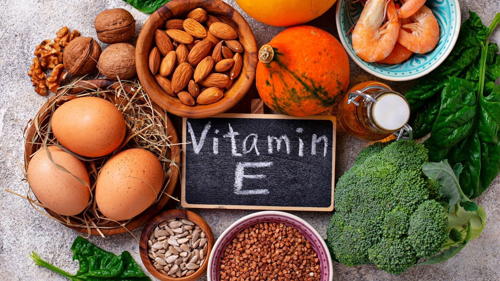

វីតាមីនEគឺជាវីតាមីនដែលរលាយក្នុងខ្លាញ់ហើយត្រូវបានរកឃើញនៅក្នុងបន្លែ ប្រេងបន្លែ ផ្លែឈើ សាច់សត្វ គ្រាប់ធញ្ញជាតិ ស៊ុត និង ប្រេងស្រូវសាឡីព្រមទាំងមានជាអាហារបំប៉នផងដែរ។ ម៉្យាងវិញទៀត វិតាមីន E ជួយក្នុងការព្យាបាលអ្នកជំងឺដែលខ្វះវីតាមីនEដោយសារតែកត្តាហ្សែននិងទារកកើតមុនខែដែលមានទម្ងន់ស្រាលខ្លាំង។
មនុស្សមួយចំនួនបានប្រើប្រាស់វីតាមីនEសម្រាប់ព្យាបាល និង បង្ការជម្ងឺដែលទាក់ទងនឹងបេះដូងនិងសរសៃឈាមដូចជា ជំងឺឡើងរឹងនៃសរសៃអាកទែ ជម្ងឺគាំងបេះដូង ជំងឺឈឺចុកទ្រូង ជំងឺឈឺជើងដោយសារតែការស្ទះសរសៃអាកទែ និង ជំងឺលើសសំពាធឈាម។
វីតាមីន E ក៏ត្រូវប្រើដើម្បីព្យាបាលជំងឺទឹកនោមផ្អែម និងផលវិបាករបស់វា។ វីតាមីន E ក៏ត្រូវប្រើដើម្បីការពារជំងឺមហារីក ដូចជា មហារីកសួត និងមាត់ ចំពោះអ្នកជក់បារី មហារីកពោះវៀនធំ (Colorectal Cancer) និង Polyps (សាច់ជាលិកាតូចដែលច្រើនដុះឡើងនៅក្នុងពោះវៀនធំ) និងមហារីកលើ ក្រពះ ក្រពេញប្រូស្តាត និងលំពែង។
ម៉្យាងវិញទៀត វាក៏ត្រូវបានប្រើប្រាស់ទៅលើជំងឺបង្កដោយខួរក្បាលនិងប្រព័ន្ធប្រសាទដូចជា ជំងឺ Alzheimerជំងឺបាត់បង់ការចងចាំ ជំងឺParkinson រមួលក្រពើពេលយប់ ជំងឺជើងនៅមិនស្ងៀម និង ព្យាបាលស្គន់ជាន់រួមជាមួយថ្នាំផ្សេងទៀត។ ក្រៅពីជំងឺខាងលើនេះ វីតាមីនEក៏ប្រើសម្រាប់ជំងឺHuntington’s chorea និងជំងឺដែលបង្កដោយប្រព័ន្ធប្រសាទនិងសាច់ដុំផងដែរ។
សម្រាប់ស្ត្រីវិញ វីតាមីន E ប្រើសម្រាប់បង្ការផលវិបាកនៃការមានផ្ទៃពោះយឺត (Late pregnancy) ដោយសារ ការកើនសម្ពាធឈាមពេលមានផ្ទៃពោះ (Pre-eclampsia) បណ្ដុំរោគសញ្ញាពេលមុនមករដូវ (PMS) ឈឺចាប់ពេលមករដូវ អាការៈពេលអស់រដូវ ក្ដៅក្រហាយដោយសារមហារីកដោះ និងគីសសុដន់។
ពេលខ្លះវីតាមីន E ប្រើដើម្បីបន្ថយប្រសិទ្ធភាពគ្រោះថ្នាក់ នៃការព្យាបាលដូចជា ការលាងឈាម និងវិទ្យុសកម្ម។ វីតាមីនE ក៏ប្រើដើម្បីបន្ថយផលរំខានដែលមិនចង់បាន ដូចជាជ្រុះសក់ ចំពោះអ្នកជំងឺដែលប្រើ ថ្នាំ Doxorubicin និងការខូចខាតសួតដោយសារ លេបថ្នាំ amiodarone។

វីតាមីន E ពេលខ្លះប្រើដើម្បីបង្កើនកំលាំងរាងកាយ បង្កើនថាមពល បន្ថយការខូចខាតរបស់សាច់ដុំ បន្ទាប់ពីហាត់ប្រាណរួច និងបង្កើនកំលាំងសាច់ដុំ។
វីតាមីនE ក៏ប្រើដើម្បីព្យាបាល ជំងឺ Cataracts ហឺត ការបង្ករោគលើស្បែក ជំងឺស្បែក ស្បែកជ្រីវជ្រួញ រលាកពន្លឺថ្ងៃ ជំងឺ Cystic fibrosis បញ្ហាអត់មានកូន (Infertility) លិង្គមិនឡើងរឹង (Impotence) បណ្ដុំរោគសញ្ញាហត់រ៉ាំរ៉ៃ (CFS) ដំបៅក្រពះ (Peptic ulcer) ជំងឺតំណពូជខ្លះ និងការពារបញ្ហាអាលែកហ្ស៊ី។
អ្នកខ្លះលាប វីតាមីន E នៅលើស្បែកដើម្បីរក្សាស្បែកកុំ ឲ្យឆាប់ចាស់ និងការពារប្រឆំាងនឹង សារធាតុគីមីប៉ះពាល់ស្បែកពេលព្យាបាលជំងឺមហារីក (Chemotherapy)។
តើយើងគួរយល់ដឹងអ្វីខ្លះមុននឹងប្រើប្រាស់វីតាមីនE?
ជួបពិគ្រោះជាមួយគ្រូពេទ្យឬឱសថការីប្រសិនបើ:
-អ្នកជាស្រ្ដីមានគភ៌ឬកំពុងបំបៅដោះកូន ព្រោះអំឡុងពេលនេះ អ្នកអាចប្រើថ្នាំបាន តាមការណែនាំរបស់គ្រូពេទ្យប៉ុណ្ណោះ។
-អ្នកប្រើប្រាស់ឱសថអ្វីផ្សេងទៀត
-អ្នកមានប្រតិកម្មជាមួយសារជាតិនៃវីតាមីនKឬឱសថពេទ្យឬឱសថរុក្ខជាតិផ្សេងៗ
-អ្នកមានជំងឺផ្សេងៗ
-អ្នកមានប្រតិកម្មជាមួយអាហារសារជាតិបន្ថែមពណ៌ និង សារជាតិរក្សាអាហារទុកឲ្យបានយូរ ឬ សត្វ
លក្ខខណ្ឌក្នុងការចុះបញ្ជីការផ្លូវច្បាប់សម្រាប់ឱសថរុក្ខជាតិមិនតឹងរ៉ឹងដូចការចុះបញ្ជីការផ្លូវច្បាប់ទៅលើថ្នាំពេទ្យទេ។ ដូចនេះគួរតែមានការសិក្សាបន្ថែមពីសុវត្ថិភាពលើឱសថទាំងនេះ។ អ្នកត្រូវប្រាកដថាអត្ថប្រយោជន៍នៃការប្រើថ្នាំនេះខ្ពស់ជាងកត្តាប្រឈម។ សូមពិគ្រោះជាមួយគ្រូពេទ្យដើម្បីអាចដឹងពីព័ត៌មានបន្ថែម។
តើវីតាមីនEមានសុវត្ថិភាពកម្រិតណា?
វីតាមីនEគឺមានសុវត្ថិភាពសម្រាប់មនុស្សភាគច្រើនដែលមានសុខភាពល្អនៅពេលដែលទទួលទានតាមមាត់ ឬ ប្រើប្រាស់លើស្បែក។ ក្រៅពីនេះទៀត វីតាមីនE ក៏មិនបង្កផលប៉ះពាល់ដែរប្រសិនបើអ្នកទទួលទានតាមការណែនាំទៅតាមកម្រិតប្រចាំថ្ងៃ១៥មិល្លីក្រាម។